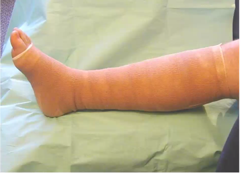
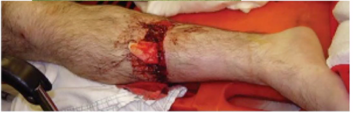
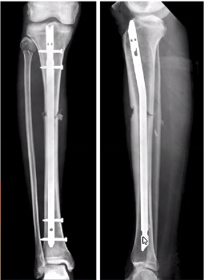
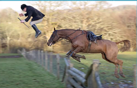
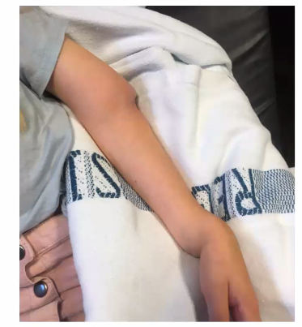
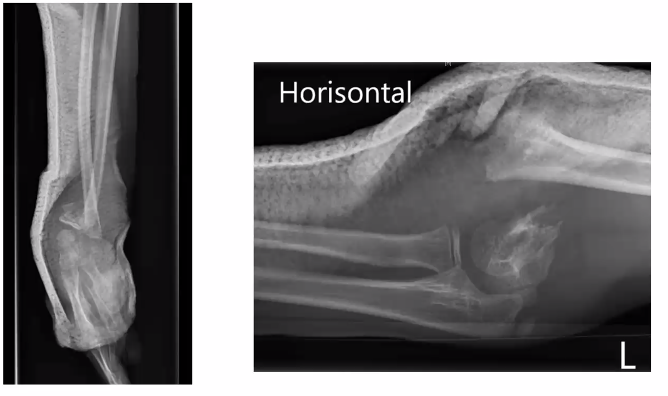
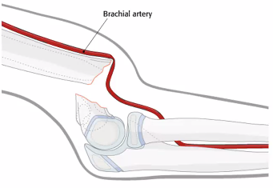
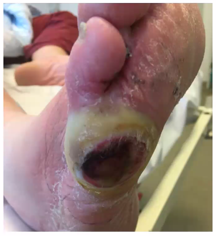
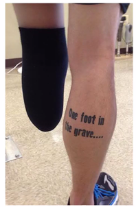
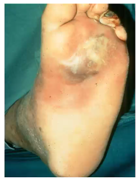

Akut ortopædkirurgi
Dan siger godmorgen.
- Dårligt vejr - juhuu
- Sidste skoledag. Dan har taget flag med
- Man kan tænke over at det nu er en anæstesiolog der siger velkommen til sidste skoledag...
- Sebastian er ortkir i Køge
- Dan spiser karameller fordi det er sidste skoledag...
Case 1
- Kvinde på 20 år der er blevet OP
- Osteosyntese
- Smerter siden opvågning
- NU kan hun ikke holde det ud længere.
- Ulidelige smerter i ben

POLL - Hvad tror du er mest sandsynlige årsag til patientens smerter?
- Kompartmentsyndrom
- Mange smerter?
- Hurtigt udvikling? 19-06-2020 08:23
- Infektion
- Ikke så tidligt? (1 døgn)
- Manglende smertestillende
- Nerveskade
- Hysteri
- Blokade aftager
- DVT
- Altid in mente ved kirurgi
- For stram bandage
- Absolut mulighed, iskæmi.
- Hvilke diagnoser er potentielt farlige
- Hvordan kommer du videre?
- Bandagen skal af.
- Hvorfor er der bandage.?
- Marvsøm
- Benet skal ikke hæve så meget.
Anamnese Case 1
- Faldt af hest i går
- Kommet ind på travl vagt
- Træder hende over ben

- OP-notat, taget 3,5 time
- 3,5 t er lang tid
- Har fået morfin - lød som nok..
- noget med 10 mg og Pn.

- Mange smerter når bandagen tages af.
- BEN HÅRDT SOM HVIS MAN HAR TABT EN COLA FLASKE.
- Samme poll - nu er Kompartmentsyndrom mest sandsynlig.
- Hvad gør du nu?
- Tager pt. akut på OP og åbner benet
- Øger smertestillende
- Ligger en strammere forbinding
- Opstarter Trombolyse
- Opstarter AB
- Beroliger patienten og fortsætter Tiger King på vagtværelset
- Ringer til en ven
- så tager pt akut på OP og åbner benet.
- alle 4 kompartments skal åbnes/fascie spaltes
- hvis man er cool, så kan man bruge 2 snit der åbner alle 4 kompartments
Kompartmentsyndrom
- Defintion:
- En smertefuld tilstand, der opstår når trykket i en muskelloge stiger til et farligt højt niveau. (AAOS)
- Akut og kronisk
- Sygehistorie
- Ofte knusningslæsioner
- Knallerter, kødscootere (heste)
- Præsentation
- Behandling
- Fasciotomi, Fasciotomi, Fasciotomi
- Det er ikke ikke forkert at få en ældre kollega med til
- Det er en svær klinisk beslutning.
Case 2

- Du kommer i tanke om at case 1 var i fuld gallop.
- Breakouts
- Hvad er det for en skadesmekanisme hun er udsat for?
- Høj-energi traume/ulykke => Traumepatienten
- Alle hesteulykker skal være traume sådan ca.
- Hvad kan der potentielt være sket med hende?
- Indre blødning,
- hovedet (EDH, aSDH?),
- andre alvorlige frakterer som er skjult af morfin.
- Ustabil rygfraktur.. Frailchest.
- Hvad gør du nu (som den ansvarlige og grundige læge)?
- ABCDE (stabil), Anamnese. i CT-skanneren., ringer hjælp
- Anamnese:
- bevidstløs? husker ikke traume mekanisme. nærmere.
- klager over smerter i ryggen.
- Hvad er det for en skadesmekanisme hun er udsat for?
- BREAKOUT 2
- Hvilke objektive undersøgelser vil du lave?
- ABCDE
- Neurologisk
- Andre frakturer?
- Bankeømhed af spinosi.
- Grundig objektiv us. Neurologisk
- DRE - rygsmerter
- refleks.
- Ribbensbrud.
- Hvilke parakliniske undersøgelser vil du lave?
- CT-skanning fra top til tå.
- ondt i ryggen.
- Biokemi.
- CT-skanning fra top til tå.
- Hvilke objektive undersøgelser vil du lave?
- Der var en CT med rygfraktur
- Ustabil / stabil? fangende det ikke
- vi ringer til rygkirurgsk på RH.
- Umiddelbart ustabil
- Neurologisk intakt.
- Transport og lejring.
- Fixeret? Immobilisering somehow
- NKR om columna transport.
- AKutte rygtilstande
- 19-06-2020 08:57
- der er ikke nogle der forventer vi skal kunne dette.
Pointe af case 2
- Man overser tit småting ved alvorlige ting.
- Man kan kalde traumekald senere også -
Case 3
- Nu ringer telefonen
- Befippet sgpl. Dans søn 6-årige søn er faldet på trambolin. Av arm

Hvad tror du han kan fejle?
- Distorsion af albuen
- Midtskaft antebrachiumfraktur
- Suprakondylær humerusfraktur
- Distal antebrachiumfraktur
- Distal antebrachiumfraktur og suprakondylær *
- humerus fraktur
- Galleazi fraktur
- Monteggia fraktur
- Essex-Lopresti fraktur

- Brud igennem epifyseline
- Skal IKKE forsøges reponeres i skadestue
- Skal fixes første gang, så de er i gennemlysning på OP.
- Hud truet?
- Puls-Motorik-Sensorik.
- Suprakondylærhumerusfraktur
- Sæsonbetinet skade, tramboliner
- Kan være akut og problematisk
- Kan være svært og grænseoverskridende for ortkir
Breakout
- Hvad vil du undersøge?
- Puls-motorik-sensibilitet (neuro-vaskulæreforhold)
- Dan: Man kan også bruge SAT-måleren
- Sebastion ikke helt enig: 19-06-2020 09:26
- Doppleren er bedre, og den burde være i skadestue. *
- Dan: Man kan også bruge SAT-måleren
- Inspektion sml. modsidige arm
- Åben lukket fraktur?
- Puls-motorik-sensibilitet (neuro-vaskulæreforhold)
- Hvad frygter du at finde ved objektiv undersøgelse?
- Mgl. PMS!
- brud på hud?
- Hvad skal vi gøre?
- HJÆLP, AB, tenatus, stopblødning og skid på resten.

POLL - Pt har usikker puls i a. radialis. Hvad skal der ske?
* Overflytter pt til karkirurgisk (29%) * Sebastian har prøvet at ringe til dem, de siger han selv må fixe det først og se om det hjælper. * Lader pt faste og observerer (3%) * Gør pt klar til osteosyntese med det same (68%) * Og obserevere dem efter om puls bliver bedre, hvis ikke så karkir. * Reponerer frakuren i skadestuen, ligger gips og sender pt. hjem (0%)
Hurtig opsummering om neurovaskulær 19-06-2020 09:31
- Forsøg at genoprette knogle-led først
- Sår skal udelukkes
- Ny neurovaskulærstatus efterfølgende.
- Spgmål?
Spørgmål
- Ved neuropåvirkning - hvem ringer man til?
- Lokale retningslinjer / vejl.
- Der begynder at ske noget ca. 2 timer efter arterieskade, så man skal tænke lidt hrutigt hvis der ikke er puls i hånden. Er den helt bleg, så er den ikke god.
- AKL: apropos ankel.. der skal man åbenbart reponere før man tager rtg af den.
- de andre kan man tage rtg først.
Case 4
19-06-2020 09:37

- Rød, varm og hævet
- Sår gnm. 3 mdr.
- BREAKOUT:
- Hvilke diagnostiske overvejelser har du?
- Venøse, arterielle, nervøse sår.
- Hvad spørger du patienten om og hvad undersøger du?
- Co-mobortitetus
- T1DM.
- Hvor længe?
- 3 mdr.
- Medicin?
- AB? *
- Co-mobortitetus
- Hvilke diagnostiske overvejelser har du?
- Det er inficeret såret.
- Gør ikke ondt i hvile
- Råd varm hævet
- taget rtg. * 
POLL - Hvad gør du nu?
- Skal hurtigst muligt til OP og have spaltet foden 24%
- Dette er svaret. Pusset skal tages ud sterilt, så D+R, og hurtigt muligt AB herefter for kan blive septisk.
- Trækker pus ud fra såret og sender til D+R 36%
- Spalter foden i skadestuen 0%
- Opstarter empirisk AB behandling 40%
TAKE HOME PLANTARABCESS

- Hvis man mistænker, så er det akut og så OP.
- Ring ortkir og råb: Plantarabcess!
- Infektioner i muskler og led. Bidsår. Kig på lokalevejl.
- Bare bombarder dem med AB
- Septisk, infektion i led
- Ledpunktur!
- Endelige beh: artrhoskopisk synektomi
- Nekrotiserende fasciit.
- De er så pisse dårlige at det overser I ikke.
- De skal bare op på den nærmeste OP på det nærmeste hospital
- hurtigt, hurtigt, hurtigt.